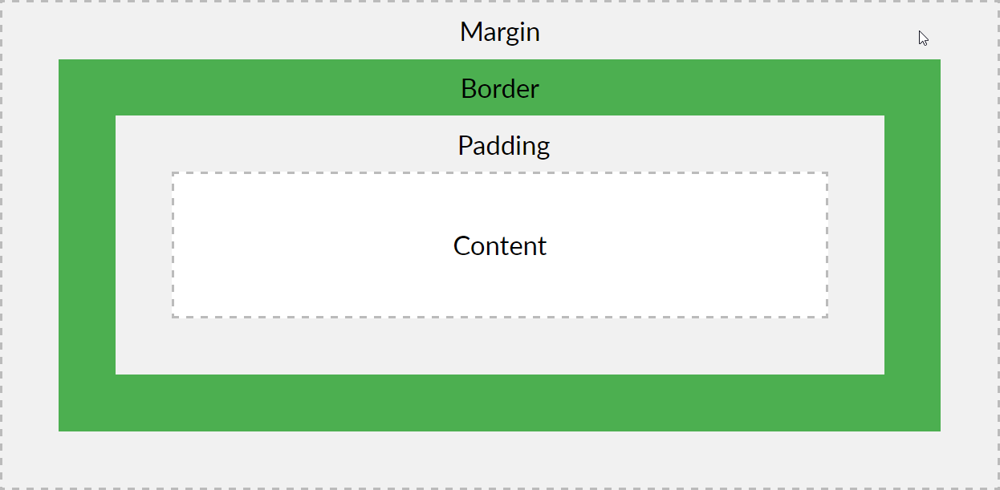

Designed by: Mateusz Marchewka
10. Właściwości modyfikujące odległość, tło i wygląd elementów
Do tej pory tylko tworzyliśmy i modyfikowaliśmy elementy na stronie. Po przyswojeniu tej lekcji będziesz umiał również spozycjonować swoje elementy oraz zmienić ich wygląd. Wszystkie elementy stworzone w języku HTML mają budowę modelu pudełka (przedstawionego poniżej).

Każdy z elementów tej budowy można dowolnie modyfikować. Dodatkowo można ustalać różne wartości dla każdego z boków danego poziomu.
- Głównym elementem jest Content w którym znajduje się aktualna zawartość danego znacznika np. tekst w p.
- Następny jest Padding wyznacza on odległość pomiędzy zawartością elementu a jego obramowaniem.
- Kolejną warstwą jest border który może służyć walorom estetycznym oraz jest granicą danego elementu.
- Ostatnią warstwą jest margin i wyznacza on odległość od granic nadrzędnego elementu do podrzędnego.
Spróbujmy pokazać to na przykładzie:
Zacznijmy od stworzenia contentu w HTML
Teraz w CSS nadajmy obramowanie (border). Oraz wyzerujmy padding.
border: 1px solid black;
padding: 0px;}
Efekt:
Jak widać nasza zawartość jest "przyklejona" gdy nie ma żadnego paddingu.
Wyzerujmy jeszcze margin z prawej strony by zobaczyć czy nasz element zareaguje.
Content
border: 1px solid black;
margin-right: 0px;
padding: 0px;}
Efekt:
Content
Myślę, że nie ma już żadnych wątpliwości co do budowy pudełkowej elementów HTML. Teraz przejdźmy do dokładnego omówienia tych właściwości:
Margin,border i padding możemy wyznaczać w 4 sposobach.
- Pierwszy z nich to podanie jednej własności dla wszystkich czterech boków.
- Następny sposób to podanie dwóch wartości, z czego pierwsza będzie dotyczyła góry i dołu a druga strony lewej
i prawej.
- Trzecim sposobem jest podanie wartości na każdą stronę osobno.
- Czwartym sposobem jest zapisanie auto zamiast wartości. Przykładowo dając taką właściwość jak poniżej wyśrodkujemy nasz element.
Ustaliliśmy sobie że można dać dowolne wartości dla dowolnego boku w modelu pudełkowym. Teraz przejdźmy do modyfikacji wyglądu border'a ponieważ jest to jedyny widoczny element.
Definiując border na przykładzie powyżej użyłem stwierdzeń solid i black. Zamiast Black możesz użyć dowolnego koloru. Natomiast solid oznacza obramowanie stałe, możesz również użyć innych wartości:
border: 3px dotted black;
border: 3px dashed blue;
border: 3px double red;
Nasze elementy mogą mieć również różne tła, dlatego teraz przedstawię ci parę właściwości modyfikujących właśnie tło.
Najbardziej podstawowym tłem jest jednolity kolor. Ustawiamy go w ten sposób:
Jako tło możesz ustawić również zdjęcie.
Efekt
Efekt
Jak widzisz wstawiając tło ze zdjęciem, jeżeli zdjęcie zmieści się więcej niż jeden raz na szerokości elementu to będzie się powtarzać. Możesz zatrzymać ten efekt tą modyfikacją:
Możesz również powtarzać tło w pionie repeat-y lub
w poziomie repeat-x.
Jeśli chcesz zmienić ustawienie tła możesz użyć tej właściwości by ustawić tło na lewej, prawej stronie lub środku :
Możesz również ustawić żeby twoje tło zostało w tym samym miejscu pomimo przewijania strony. Właściwość odpowiedzialna za tę funkcje to:
background-repeat: no-repeat;
Efekt
Efekt
Możesz również ustalać szerokość elementów na twojej stronie, dzięki właściwości width oraz wysokość elementów dzięki właściwości height.
width: 100px;
height: 100px;}
Efekt
Na naszej stronie możemy również ustawiać obiekty warstwami. Dzięki właściwości w CSS: z-index Możesz ustawić jeden obrazek na drugim obrazku. Wystarczy, że na element który ma być wyżej ustawisz większą wartość przy z-index.
img{z-index: 2;}

Efekt
Jeżeli chcesz żeby jakiś element miał możliwość przewijania swojej zawartości musisz nadać mu właściwość:
Jeżeli chcesz żeby twój element nie miał "ostrego" obramowania, możesz użyć właściwości border-radius która spowoduje że twój element będzie miał zaokrąglone rogi.
Efekt:
Jeśli chcesz żeby twój element rzucał cień możesz użyć właściwości box-shadow z czterema własnościami. Pierwsza liczba to oddalanie cienia od obiektu poziomo, druga liczba to oddalenie pionowo, trzecia liczba to rozmazanie cienia
a czwarta wartość to kolor cienia.